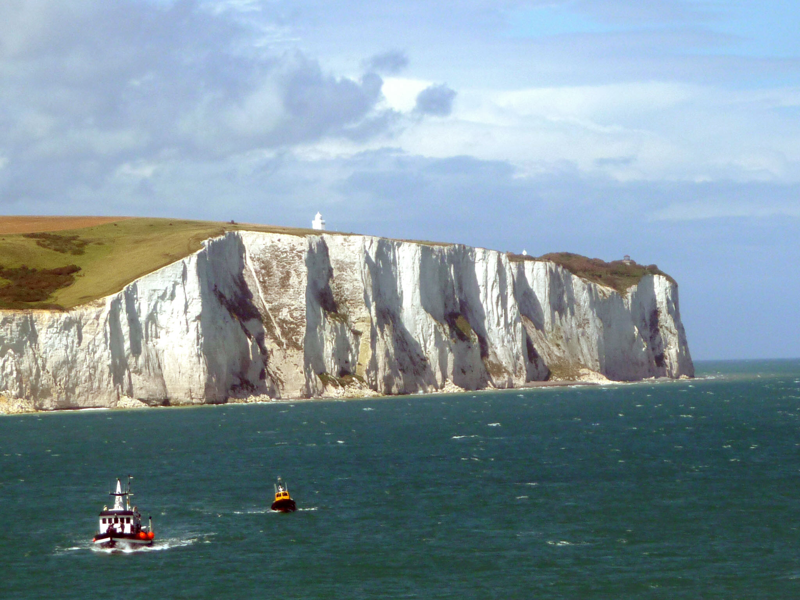
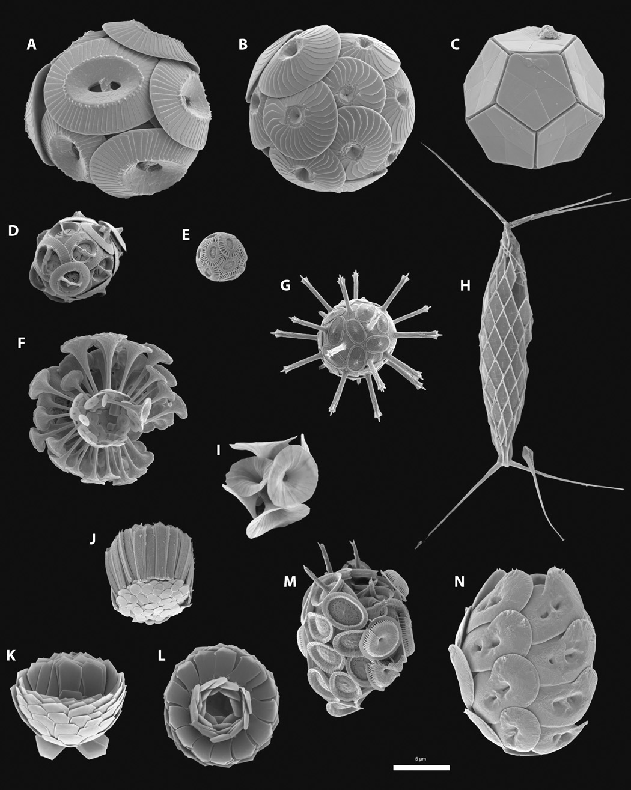
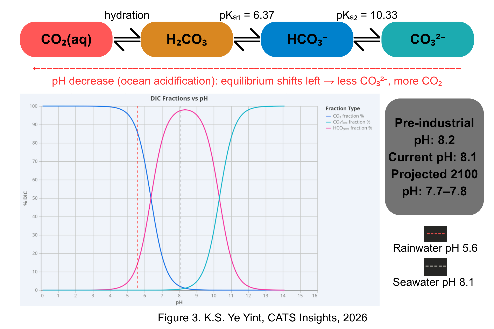
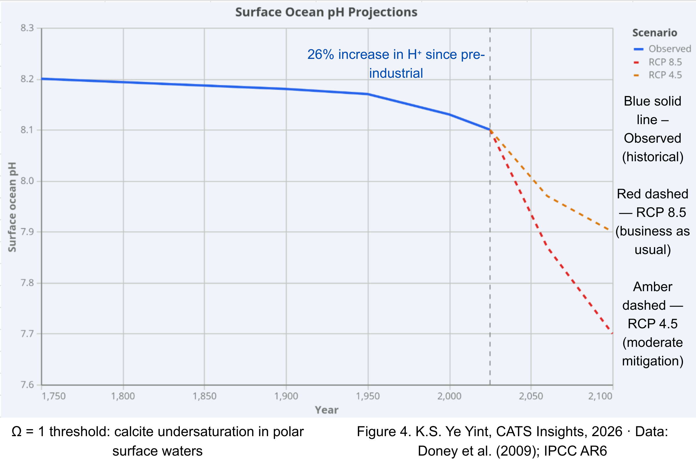

{kind=link}
I. Shells to Stone: Coccolith Sedimentation and Diagenesis
The chalk owes its existence to coccolithophores, unicellular marine phytoplankton belonging to the division Haptophyta. These organisms, typically 5–20 µm in diameter, construct an external armour of interlocking calcite plates called coccoliths, each plate measuring approximately 1–5 µm across.2 The dominant species in modern oceans is Emiliania huxleyi, though the Cretaceous assemblage would have been taxonomically different; genera such as Watznaueria and Prediscosphaera are the principal coccolith taxa recovered from English chalk deposits.3

Coccolith formation is an entirely intracellular process. Calcite crystals are nucleated upon an organic baseplate within a specialised Golgi-derived vesicle, the coccolith vesicle, where crystal growth is directed by coccolith-associated polysaccharides (CAPs) that regulate nucleation sites and control crystal morphology.2 The net intracellular reaction is:
Ca2+ + 2HCO3- → CaCO3 + CO2 + H2O
This is significant since for every mole of calcite precipitated, one mole of carbon dioxide is released, meaning that coccolithophore calcification is simultaneously a carbon sink (locking carbon into solid CaCO3) and a carbon source (releasing CO2 that can re-enter the atmosphere).4 The net effect on atmospheric carbon depends on the balance between these two fluxes, a balance that remains one of the central questions in marine biogeochemistry.
During the Late Cretaceous period (approximately 100–66 million years ago), Kent's coastline lay beneath a warm, shallow epicontinental sea at a palaeolatitude of roughly 35°N.3 Conditions were ideal for sustained coccolithophore productivity: elevated atmospheric CO2 concentrations (estimated at 600–1,200 ppm, compared to roughly 425 ppm today), warm sea-surface temperatures, and an extensive flooded continental shelf that suppressed terrigenous sediment input.5 When coccolithophores died, their coccospheres disaggregated, and the individual coccolith plates rained down through the water column, accumulating on the seabed at rates of approximately 0.5–2 millimetres per year.3,6
Over approximately 30 million years of sustained deposition, this process built chalk strata up to 500 metres thick in parts of southern England.6 The transformation from soft coccolith ooze to solid chalk rock is called diagenesis. As overlying sediment accumulated, the increasing overburden pressure expelled pore water and compacted the coccolith fragments. Small secondary calcite crystals precipitated in the intergranular spaces, cementing the compacted mass into a coherent rock with a typical porosity of 35–45% and a composition of 95–99% calcium carbonate by weight.3 Horizontal bands of black flint visible in the cliff face formed later during diagenesis, as dissolved silica from the skeletons of siliceous radiolarians and sponge spicules migrated through the chalk and precipitated as microcrystalline quartz nodules.6
II. Why Chalk Is White: Light Scattering in Microcrystalline Calcite
Pure calcite is transparent. A single crystal of Iceland spar, the optically clear variety prized since the seventeenth century for its extraordinary birefringence, transmits light from approximately 250 nm to 2,500 nm with minimal absorption.7 So why are the Dover cliffs white? The answer lies not in the crystal structure of calcite itself, but in the microcrystalline texture of chalk.
Chalk is composed of billions of calcite particles, coccolith fragments and secondary cement crystals, each measuring between 0.5 and 5 µm in diameter. When visible light (wavelengths 380–700 nm) encounters a particle whose dimensions are comparable to or larger than the wavelength, it undergoes Mie scattering, a process in which the incident radiation is redirected in all directions without wavelength-selective absorption.8 Because chalk's grain size falls squarely in this regime, all wavelengths of visible light are scattered with approximately equal efficiency. The result is diffuse, broadband reflectance: whiteness. This is the same physics that makes snow white (ice crystals scatter light), milk white (fat globules scatter light), and clouds white (water droplets scatter light). In each case, the material's individual constituents are transparent; the opacity and whiteness emerge from the collective scattering of vast numbers of microscopic particles.8 Chalk's high porosity further enhances the effect by creating innumerable air–calcite interfaces, each of which presents a refractive index boundary (calcite: n = 1.49–1.66; air: n = 1.00) at which additional scattering occurs.
There is a practical corollary to these optics. The softness of chalk (Mohs hardness 3, inherited directly from calcite) means that the cliff face is continually being refreshed by coastal erosion. Wave undercutting at the base causes blocks of chalk to collapse, exposing fresh, unweathered surfaces. It is this constant renewal that keeps the cliffs white; a stable, unrefreshed chalk surface would gradually discolour as biological growth and atmospheric deposition accumulated.1 The erosion rate has increased to 220–320 mm per year over the last 150 years, approximately three to five times the pre-industrial rate of 20–60 mm per year, driven primarily by the loss of protective beach material and the increasing frequency of severe storms.1
III. Dissolving the Cliffs: Carbonate Equilibria and Chemical Weathering
The White Cliffs are not static. They are being dissolved, grain by grain, by a set of coupled equilibrium reactions that connect atmospheric carbon dioxide to the chemistry of every raindrop that strikes the chalk surface.

The process begins in the atmosphere. Carbon dioxide dissolves in rainwater to form carbonic acid, a weak diprotic acid:
CO2(g) + H2O(l) ⇌ H2CO3(aq) K1 = 3.4 × 10-2 at 25°C
Carbonic acid then dissociates in two stages, releasing hydrogen ions that lower the pH of the solution:
H2CO3(aq) ⇌ H+(aq) + HCO3-(aq) Ka1 = 4.3 × 10-7
HCO3-(aq) ⇌ H+(aq) + CO32-(aq) Ka2 = 4.7 × 10-11
Unpolluted rainwater in equilibrium with atmospheric CO2 at current concentrations (approximately 425 ppm) has a pH of roughly 5.6.9 When this weakly acidic solution contacts the chalk, the hydrogen ions react with calcium carbonate in a dissolution reaction:
CaCO3(s) + H2CO3(aq) ⇌ Ca2+(aq) + 2HCO3-(aq)
The overall process converts solid calcite into soluble calcium bicarbonate. This is a reversible equilibrium: the position of the reaction depends on the partial pressure of CO2, temperature, and the pH of the solution. Le Chatelier's principle predicts, correctly, that increasing atmospheric CO2 drives the equilibrium to the right, accelerating dissolution. Conversely, removing CO2 (for example, when groundwater emerges at the surface and degasses) shifts the equilibrium to the left, causing calcite to precipitate, a process responsible for stalactite and stalagmite formation in chalk caves and for the calcite-rich 'hard water' characteristic of Kent's domestic water supply.9
The dissolution is visible at every scale. At the cliff face, acidified rainwater percolating through vertical fractures and bedding planes carves the distinctive gullies and undercuts that define the Dover coastline. Across geological timescales, this process has transported millions of tonnes of dissolved calcium back into the ocean, where marine organisms recycle it into new shells, completing the lithospheric component of the carbon cycle.4 The cliffs are, therefore, not merely a product of the carbon cycle, they are an active participant in it, mediating the transfer of carbon between the atmosphere, hydrosphere, and lithosphere.
IV. Fire and Powder: Thermal Decomposition and Kent's Lime Industry
Kent's chalk has been quarried and burnt for at least two thousand years. Lime burning was a technology introduced to Britain by the Romans, and there is no evidence of lime kilns in England before the Roman period.10 The chemistry is textbook thermal decomposition:
CaCO3(s) → CaO(s) + CO2(g) ΔH = +178 kJ mol-1
The reaction requires temperatures above 840°C, at which point the partial pressure of CO2 above the calcium carbonate surface exceeds one atmosphere, allowing carbon dioxide to escape irreversibly in an open kiln.11 In practice, temperatures of 900–1,000°C were used to drive the reaction to completion within a practical timeframe, though exceeding 1,200°C produced 'dead-burnt' lime, an unreactive sintered product that was useless as a building material.11
The product, quicklime (calcium oxide), is chemically unstable in the atmosphere. Mixed with water in a violently exothermic reaction called slaking, it produces calcium hydroxide:
CaO(s) + H2O(l) → Ca(OH)2(s) ΔH = −65 kJ mol-1
Calcium hydroxide, or slaked lime, was the essential ingredient in lime mortar, the binding agent that built medieval Canterbury's cathedral, its city walls, and the castles at Dover, Rochester, and Leeds.10 Over months and years, the mortar hardened as calcium hydroxide reabsorbed atmospheric carbon dioxide and reconverted to calcium carbonate:
Ca(OH)2(s) + CO2(g) → CaCO3(s) + H2O(l)
This slow carbonation means that lime mortar effectively recaptures most of the CO2 originally released during calcination, a natural carbon loop that makes traditional lime mortar significantly less carbon-intensive over its lifecycle than modern Portland cement.11 The chemistry comes full circle: chalk is burnt to release CO2 and produce quicklime; quicklime is slaked and used as mortar; the mortar reabsorbs CO2 from the air and slowly reverts to calcium carbonate. The mediaeval builders of Canterbury were, without knowing it, exploiting a reversible reaction.
Beyond construction, quicklime was applied to Kent's acidic Weald Clay soils as an agricultural amendment. Calcium oxide neutralises soil acidity through the reaction:
CaO(s) + 2H+(aq) → Ca2+(aq) + H2O(l)
Kent's lime-burning kilns, now mostly ruined or converted into private homes, were concentrated along the chalk downlands of the North Downs. They represent the industrial infrastructure of a chemistry that sustained the county's agriculture and construction for centuries.10
V. The Acid Test: Ocean Acidification and the Carbonate Saturation State
The chemistry that shaped the cliffs over geological time is now operating in reverse and at an accelerating rate. Since the beginning of the Industrial Revolution, the ocean has absorbed approximately 30% of anthropogenic CO2 emissions.12 This absorption triggers the same carbonic acid equilibria described in Section III, but in seawater rather than rainwater, and the consequences for calcifying marine organisms are severe.

The key reactions are:
CO2(g) + H2O(l) ⇌ H2CO3(aq) ⇌ H+(aq) + HCO3-(aq)
The excess hydrogen ions then react with dissolved carbonate ions:
H+(aq) + CO32-(aq) ⇌ HCO3-(aq)
This is the critical step. The hydrogen ions do not simply accumulate freely in solution; they are partially buffered by reacting with carbonate to form bicarbonate. The result is a simultaneous decrease in pH and a decrease in the concentration of dissolved carbonate ions (CO32-).12,13
Since the pre-industrial era, average surface ocean pH has fallen from approximately 8.2 to 8.1, a 0.1-unit decline that represents a roughly 26% increase in hydrogen ion concentration, because the pH scale is logarithmic.12 The biological significance is captured by the calcite saturation state (Ω), defined as:
Ω = [Ca2+][CO32-] / Ksp
Where Ksp is the solubility product of calcite at the relevant temperature and pressure. When Ω > 1, seawater is supersaturated with respect to calcite, and shell formation is thermodynamically favourable. When Ω < 1, calcite dissolution is favoured.13
Current surface ocean waters remain supersaturated (Ω > 1) for calcite, but the saturation state is declining. If atmospheric CO2 reaches 800 ppm under business-as-usual emission scenarios, surface pH is projected to fall by a further 0.3–0.4 units by 2100, representing a total increase in ocean acidity of 100–150% relative to pre-industrial conditions.12,13
For coccolithophores, the very organisms whose ancestors built the Dover chalk, this presents an existential challenge. Laboratory studies have demonstrated that calcification rates in key species decline under elevated CO2 conditions, producing thinner coccoliths and weaker coccospheres.2 The saturation horizons, the ocean depths below which calcite dissolves, are already shoaling by 30–200 metres globally since the pre-industrial period.13 The White Cliffs, in this sense, record the conditions of a world in which marine calcification flourished; the chemistry of the modern ocean is trending away from those conditions.
VI. The Archive, Revisited
The White Cliffs of Dover compress 30 million years of marine productivity into a single geological monument. The coccolithophores that built them used intracellular calcification in Golgi-derived vesicles, and the diagenesis that hardened them illustrates pressure-driven cementation and silica remobilisation; the whiteness that defines them is an exercise in Mie scattering at the micron scale. The dissolution that reshapes them every winter is Le Chatelier's principle in real time, and the ocean acidification that threatens their living descendants is the same carbonate chemistry running under different boundary conditions. From biomineralisation to thermal decomposition, from equilibrium thermodynamics to global biogeochemistry, these cliffs connect more branches of chemistry than any single landmark in Kent. So the next time you see them from the Dover ferry, remember that you are looking at a scientific marvel, that, and to mind the crumbling edge.
References
[1] Hurst, M.D., Rood, D.H., Ellis, M.A., Anderson, R.S. and Dornbusch, U., 'Recent Acceleration in Coastal Cliff Retreat Rates on the South Coast of Great Britain', Proceedings of the National Academy of Sciences, vol. 113, no. 47, 2016, pp. 13336–13341. doi: 10.1073/pnas.1613044113.
[2] Brownlee, C., Wheeler, G.L. and Taylor, A.R., 'Coccolithophore Biomineralization: New Questions, New Answers', Seminars in Cell & Developmental Biology, vol. 46, 2015, pp. 11–16. doi: 10.1016/j.semcdb.2015.10.027.
[3] Bell, F.G., Culshaw, M.G. and Cripps, J.C., 'A Review of Selected Engineering Geological Characteristics of English Chalk', Engineering Geology, vol. 54, no. 3–4, 1999, pp. 237–269. doi: 10.1016/S0013-7952(99)00043-5.
[4] Ridgwell, A. and Zeebe, R.E., 'The Role of the Global Carbonate Cycle in the Regulation and Evolution of the Earth System', Earth and Planetary Science Letters, vol. 234, no. 3–4, 2005, pp. 299–315. doi: 10.1016/j.epsl.2005.03.006.
[5] Berner, R.A. and Kothavala, Z., 'GEOCARB III: A Revised Model of Atmospheric CO2 over Phanerozoic Time', American Journal of Science, vol. 301, no. 2, 2001, pp. 182–204. doi: 10.2475/ajs.301.2.182.
[6] Hancock, J.M., 'The Petrology of the Chalk', Proceedings of the Geologists' Association, vol. 86, no. 4, 1975, pp. 499–535. doi: 10.1016/S0016-7878(75)80061-7.
[7] Nesse, W.D., Introduction to Mineralogy, 2nd edn (Oxford: Oxford University Press, 2012).
[8] Bohren, C.F. and Huffman, D.R., Absorption and Scattering of Light by Small Particles (Weinheim: Wiley-VCH, 1998).
[9] Stumm, W. and Morgan, J.J., Aquatic Chemistry: Chemical Equilibria and Rates in Natural Waters, 3rd edn (New York: Wiley-Interscience, 1996).
[10] Historic England, 'Pre-industrial Lime Kilns: Introductions to Heritage Assets', Historic England, 2018. https://historicengland.org.uk/images-books/publications/iha-preindustrial-lime-kilns/heag222-pre-industrial-lime-kilns/ [accessed 25 March 2026].
[11] Atkins, P. and de Paula, J., Atkins' Physical Chemistry, 10th edn (Oxford: Oxford University Press, 2014).
[12] National Oceanic and Atmospheric Administration, 'Ocean Acidification', NOAA Education, n.d. https://www.noaa.gov/education/resource-collections/ocean-coasts/ocean-acidification [accessed 25 March 2026].
[13] Doney, S.C., Fabry, V.J., Feely, R.A. and Kleypas, J.A., 'Ocean Acidification: The Other CO2 Problem', Annual Review of Marine Science, vol. 1, 2009, pp. 169–192. doi: 10.1146/annurev.marine.010908.163834.
[14] Dimes, H.G., 'Lime-burning in Kent', Archaeologia Cantiana, vol. 109, 1991, pp. 223–239.
[15] National Trust, 'White Cliffs of Dover', National Trust, n.d. https://www.nationaltrust.org.uk/visit/kent/the-white-cliffs-of-dover [accessed 25 March 2026].
[16] Giel, I., White Cliffs of Dover 02 [photograph], Wikimedia Commons. https://commons.wikimedia.org/wiki/File:White_Cliffs_of_Dover_02.JPG. CC BY-SA 3.0 [accessed 20 March 2026].
[17] Monteiro, F.M., Bach, L.T., Brownlee, C. et al., 'Why Marine Phytoplankton Calcify', Science Advances, vol. 2, no. 7, 2016, e1501822, Plate 1. doi: 10.1126/sciadv.1501822. CC BY-SA 4.0.
Kyal Sin (Jason) Ye Yint
CATS Insights, The Worthgate School
Published in CATS Insights | The Worthgate School, Canterbury, Kent Chemistry
Want to read this article offline or see the original formatting?
Download Original Article (PDF)